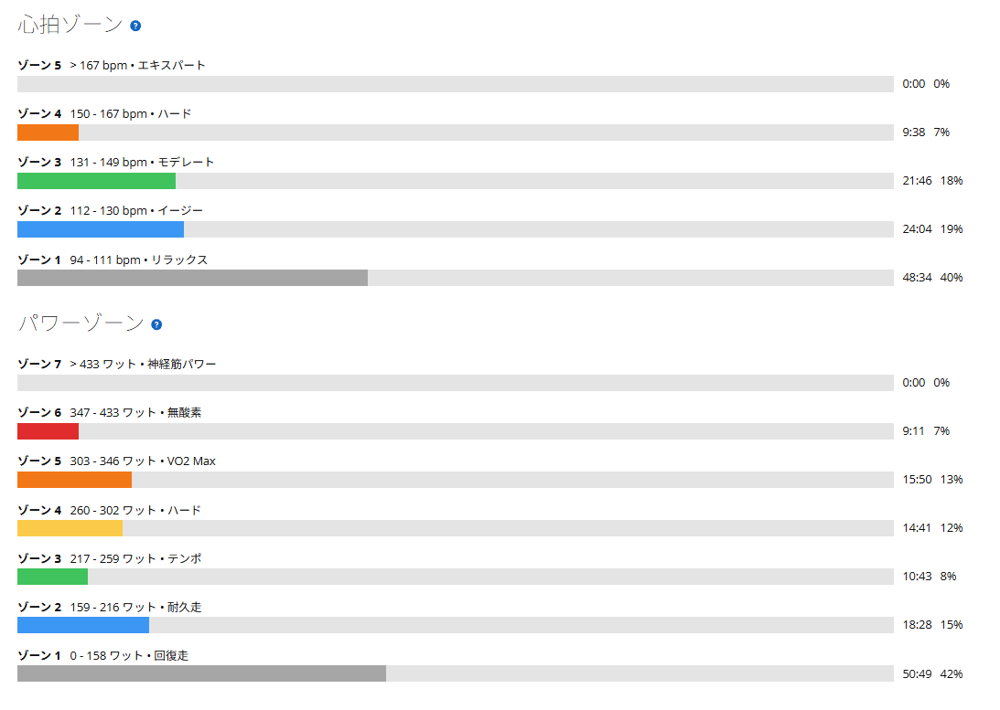

琴平峠305W、3つの山で4日前を上回れた日
昨日はローラーでSST20分×3本。267W、270W、278Wと、最後に向けて出力を上げながら合計60分を踏んだ。TSSは112.6。普通なら翌日はベース走にしてもよさそうだが、今日は天気が持ちそうだったので、せっかくだから外を走ることにした。いつもの太平→琴平→唐沢コースだ。前日にしっかり踏んだばかり。果たして今日はどれだけ走れるのか。

約52km・NP247W・TSS146
- 全体51.52km / 2時間00分45秒 / 獲得828m / 平均気温10.9℃
- 負荷平均180W / NP247W / IF0.854 / TSS146.1 / FTP設定289W
- 心拍・回転平均115bpm / 最大163bpm（測定値は要注意） / 平均81rpm
平均パワーだけ見ると静かな数字だが、登りではしっかり踏み、下りでは休む。峠をつなぐこのコースらしい内容になった。
3つの山とも、4日前を上回った
| 日付 | 太平山 | 琴平峠 | 唐沢山 |
|---|---|---|---|
| 11月4日 | 約7分・331W | 約14分・315W | 約5分半・343W |
| 11月13日 | 約7分・321W | 約14分半・296W | 約6分・326W |
| 今日 | 約7分・327W | 約14分・305W | 約6分・327W |
いちばん印象に残ったのは琴平峠。4日前の11月13日も同じコースを走っていて、そのときは296W。今回は305Wで、平均出力は9W上がり、タイムも約20秒縮んだ。太平山も6W、唐沢山も1W、4日前を上回っている。
琴平峠305W。でも、もちろん楽ではない
数字だけ見ればうれしい。ただし、余裕を残して前回を上回ったわけではない。今回も出し切った。めちゃくちゃきつかった。FTP設定は289Wなので、305Wは約106％。14分以上も踏めば、そりゃきつい。
前日にSSTを60分やったことを考えると、これだけ走れたのは悪くない。ただし、4日前を上回っただけでFTPまで上がったとは言い切れない。こういう走りを積み重ねていきたい。
寒くなってから、心拍計の数字が怪しい
今回の平均気温は10.9℃、最低気温は9℃。少しずつ冬が近づいている。そして最近、寒い日に心拍計の反応がおかしい気がする。4日前（平均気温16.5℃）は普通に上がっていたが、11日の唐沢（平均5.6℃）でも妙に上がらなかった。
| 心拍平均 | 太平山 | 琴平峠 | 唐沢山 |
|---|---|---|---|
| 11月13日 | 151bpm | 153bpm | 152bpm |
| 今日 | 132bpm | 151bpm | 130bpm |
太平山も唐沢山も、4日前より高い出力で踏んでいるのに、平均心拍は約20bpm低い。琴平峠だけは前回並みだった。太平山と唐沢山では、きつく踏んでいるのに心拍の数字と体感が合っていない。

心拍を低く保てるようになった、と喜ぶにはさすがに不自然だ。心拍計の代替手段は別途検討することにして、今回の練習評価はパワーと体感を中心に考える。
昨日つかんだペダリングの感覚は、実走ではちょっと違う
昨日のローラーでは、まだうまく言語化できない感覚があった。「尾てい骨から回る感じ」「後輪を回す感じ」「ペダルを大きく回す感じ」。尾てい骨に力を入れるという意味ではない。自分でも説明が難しいが、そのイメージだと低めのケイデンスでもパワーが出しやすく感じた。
今日はその感覚を実走でも意識してみた。ところが、ローラーと外では結構違う。勾配も路面も車体の動きも違うので、昨日の感覚をそのまま当てはめられるわけではなかった。それでも、少しずつイメージできてきた気はする。まだ「これが正解！」という段階ではない。しばらく試しながら、自分の中で再現できる感覚なのか確認していこうと思う。
しっかり苦しんで、少しだけ前へ
昨日はローラーでSST20分×3本、今日は太平→琴平→唐沢。負荷はしっかりかかっている。それでも前回より良いタイムで登れたのは素直にうれしい。もっとも、数字が上がったからといって楽になったわけではない。琴平峠は今回も全力だった。
心拍計は怪しいし、ペダリングのコツはまだ言葉にできない。それでも、ひとつずつ試しながら走れている感覚はある。富士ヒルゴールドまで、まだ道のりは長い。とりあえず今日は、しっかり踏んで、しっかり苦しんで、少しだけ前に進めた一日だった。